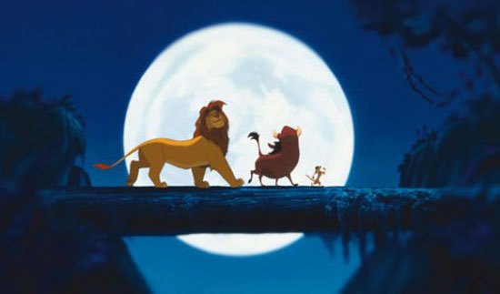
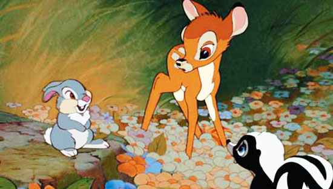
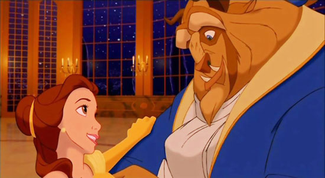
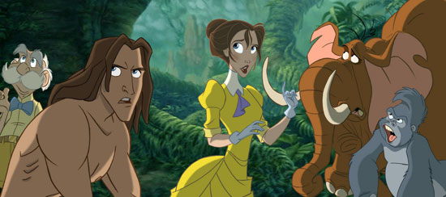
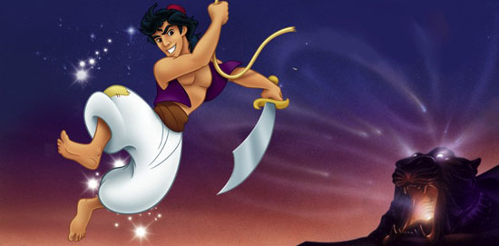

Meaning of traditional animation;
Traditional animation, also known as cel animation, or hand-drawn animation, is an animation technique where each frame of the film is drawn by hand, and was - until the arrival of computer animation - the dominant form used in cinema.
Example of traditional animated movies are;
- The Lion King (1994)

- Bambi (1942)

- Beauty & The Beast (Disney, 1991)

- Tarzan (1999)

- Aladdin (1992)

- Snow White and the Seven Dwarfs (1937)